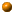

QGLViewer features
Most of the viewer's functionalities are illustrated by an example, that is referenced by the

Main features
- A camera trackball to easily move the camera is the scene (explorer or walk through mode)
- Definition of a intuitive world coordinates system (aka the openGL modelView matrix made easy)
- Coordinate systems (and hence objects) can easily be moved with the mouse
- Hierarchical coordinate systems (frames), with functions to convert from a frame to any other
- KeyFrameInterpolator to animate those frames, and especially the camera
- Screenshot saving in different file formats (jpg, png, eps, bmp...)
- Vectorial rendering of the scene for clean exports (eps, ps, xfig)
- Complete and entirely customizable shortcuts and mouse behavior
and also...
- Many simple examples illustrating the different functions
- A complete reference documentation
- Display of the frame rate, of a world axis, of a 2D grid and of camera paths, full screen display...
- Easy drawing of text directly in screen coordinate system (2D overlay) or in 3D
- Extendable displacement constraints that can be applied on those frames
- Viewer state is saved and can be restored at each new start
- A simplified drawing function can be provided to guarantee interactivity, even with large scenes
- The possibility to mix 3D and 2D (with intuitive pixel coordinates) drawing
- Possible animation of the scene at a given frame rate
- Stereo display (provided that your hardware supports it)
- Robust implementation of the basic
Vec, Quaternion and Frame classes
- Customizable help window
Philosophy
Classical 3D viewer features are directly available, so that you can quickly start the development
of a new application, focussing on what is drawn instead of how to make the computer
draw it.
All these functions are very easy to use in your application code. For instance,
if you find that you need to move an object of your scene with the mouse, at most 4 lines of code
need to be added.
See the different examples to get an more precise idea.
Send an email if you think of
a new feature.

 Last modified on Friday, April 30, 2004.
Last modified on Friday, April 30, 2004.